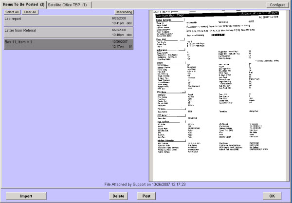

|
Description
Use this screen to scan and post documents to patient charts. When an item is scanned or imported, a bar appears on this screen in the To Be Posted list on the left side of the screen. The right side of the screen offers a preview area that displays a thumbnail of the currently selected item.
 NOTE: You can only scan from a station that has a scanner physically connected to it. The scanner must be configured for this station under the External Sources screen. See Screen: How to: Configure a Workstation to Scan. NOTE: You can only scan from a station that has a scanner physically connected to it. The scanner must be configured for this station under the External Sources screen. See Screen: How to: Configure a Workstation to Scan.
How to Access This Screen
Access this screen by selecting the Scan/Post Images button on the Utilities list from the Office View.
Screen Example

NOTE: Selecting the appropriate settings when scanning documents is very important in keeping the size of your database manageable. See Screen: Concept: Selecting Scanner Settings for details.
Want to Learn More?
Related Solutions
How to: Scan and Post Multiple Items
How to: Configure a Workstation to Scan
How to: Post Previously Scanned Documents
How to: Post Previously Scanned Document to a Patient's Chart
|